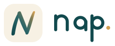
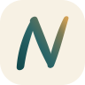
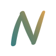
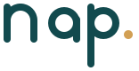
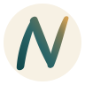

NAP · Next-generation Agent Platform
N 是躺下的 Z，也是品牌名的首字母。它由三笔手写笔画叠成 —— 竖、斜、再一竖 —— 笔锋起收略重、中段略轻，整体向右倾斜 12°，像随手签下的名字。颜色沿整枚标记从左下角的夜青一路走到右上角的灯金，没有接缝。
Night Teal#124A4E 起点
Harbor#296266 过渡
Paper#F7F1E4 底色
Lamp#D2A054 终点
Midnight#0E2B2E 深底
手写体的 N：左竖、斜线、右竖三笔叠成，笔锋在起收处略重、中段略轻，整体向右倾斜 12°，收笔圆头、没有尖角。字标 nap. 仍是几何单线，和手写标记形成松紧对比，句点取终点色。



应用顶栏

v0.1侧边栏

icon.svgicon-small.svglockup.svgmark-reversed.svglockup-reversed.svg
渐变用 userSpaceOnUse 铺在整枚标记上，而不是每笔各自渐变 —— 所以三笔虽然分开，颜色却是同一道 45° 的坡：左下角 0% 是夜青，右上角 100% 是灯金。中间经过一段青灰橄榄（不是脏灰），像铜器上的包浆，这是两个色相在感知空间里的自然路径。
小尺寸另走一档：24px 以下用 icon-small.svg，终点压深到 #B8863C。金色在纸白上本来就轻，压深一点，16px 的右上角才不会糊掉。
纸白方是默认形态（应用图标、favicon）；圆章用于头像和社交；午夜方和无底反白用于深色界面。深色下渐变整体提亮一档，夜青换成 #3F8080，否则起点会消失在底色里。

icon.svgicon-circle.svgicon-midnight.svgmark-reversed.svg单一线宽、圆头收笔、金色句点，没有字体依赖，任何环境渲染一致。放在侧边栏顶部、登录页、文档封面都成立；需要更正式的场合可以全大写 NAP，间距 +40。

wordmark.svgwordmark-reversed.svg